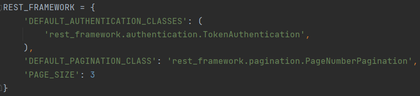
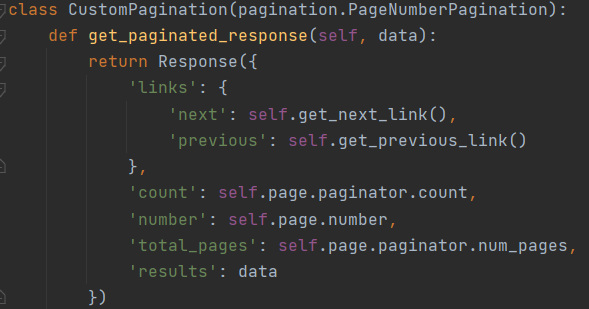
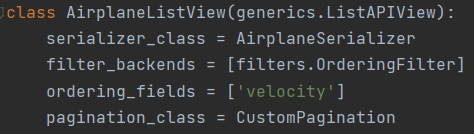

2.2 Пагинация
Задание 2.2.1:
Настроить пагинацию для любых списков в Вашем проекте.
Задание 2.2.2
Написать и применить метод пагинации, который, кроме обычного вывода вернет количество страниц пагинации и номер текущей страницы.
Базовая пагинация, установленная для всего проекта (по 3 элемента на странице): 
Код класса кастомной пагинации (настроен вывод общего кол-ва страниц и номер текущей): 
Настройка кастомной пагинации для представления AirplaneListView: 